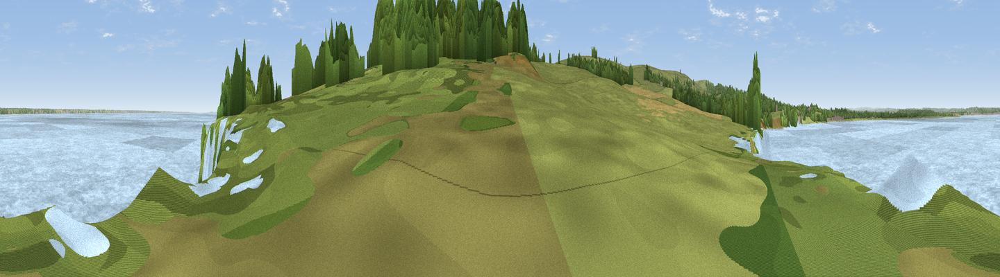

Viewpoint to Old Harry Rocks
#42207 in England · top 85% of its area beats it · near StudlandWhere it is
The exact computed spot (SZ 05134 82485). Click the marker for map links.
The view, rendered

A 360° render of this exact spot computed from the terrain model, tree cover and land cover — summer colours, afternoon light, calibrated against photographs of famous viewpoints. Real trees, hedges and buildings will differ in detail.
The panorama
Grey silhouette: terrain skyline in each direction (720 bearings, Earth curvature and refraction included). Dashed green: skyline with trees (+15 m) and buildings (+8 m) as obstacles. Blue strip: how far the ground is visible on each bearing.
Where the view opens
Wedge length = distance to the farthest visible ground on that bearing (vegetation-aware). Rings at 10, 25 and 50 km.
What fills the view
58% water · 31% woodland · 9% grassland · 2% built-up
Angular shares of the visible panorama (visual magnitude), not map area. Landscape diversity 0.44 (0–1 Shannon).
Key numbers
More beautiful places nearby
The staircase of upgrades: each row has a higher view potential than everything closer. Driving times are estimates from straight-line distance, calibrated against real road routing — check an actual route before setting out.
| Place | Direction | Drive | Score |
|---|---|---|---|
| Viewpoint near Studland | S · 1 km | ~2 min | 62.6 |
| Viewpoint near Studland | SW · 1 km | ~4 min | 80.9 |
| Viewpoint near Studland | SW · 2 km | ~5 min | 82.2 |
| Ballard Down | WSW · 3 km | ~7 min | 83.2 |
| Viewpoint near Harman's Cross | WSW · 4 km | ~10 min | 84.1 |
| Viewpoint near Worth Matravers | WSW · 11 km | ~21 min | 86.0 |
| Viewpoint near Kimmeridge | WSW · 12 km | ~23 min | 87.5 |
| Viewpoint near Chale | E · 44 km | ~65 min | 88.3 |
50.64203, -1.92875 · source: osm viewpoint · position refined by local search. Computed location — check access rights before visiting.